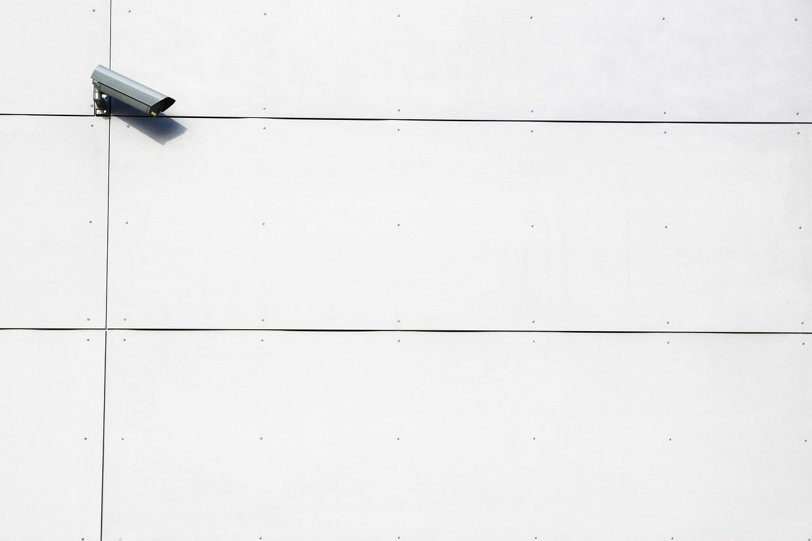

The relationship between people and visual imagery.
The depth and breadth of visual imagery.

Surveillance has been a notable contributor towards the lack of control and consent people have towards themselves, society, and between one another. But just how significant is its impact?
The relationship between people and visual imagery.
The depth and breadth of visual imagery.